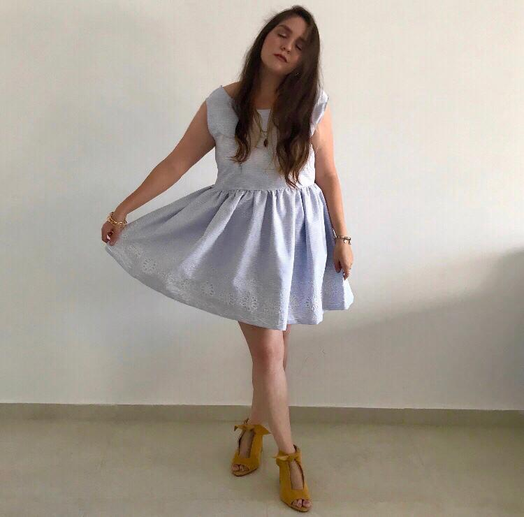
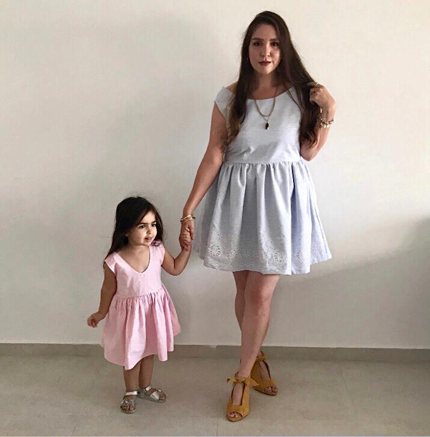
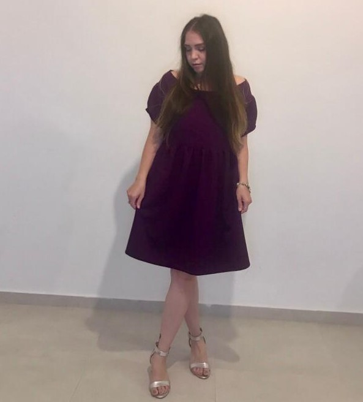
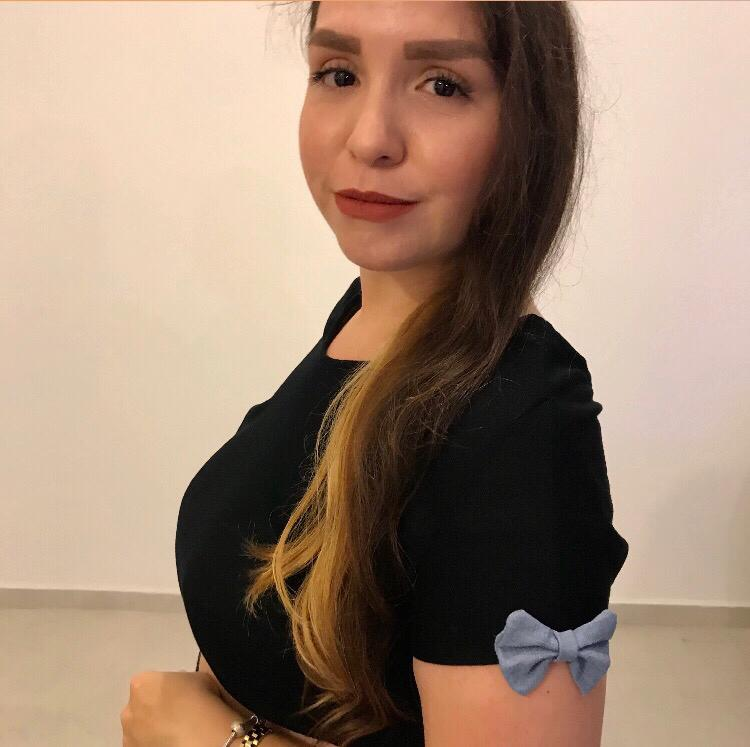
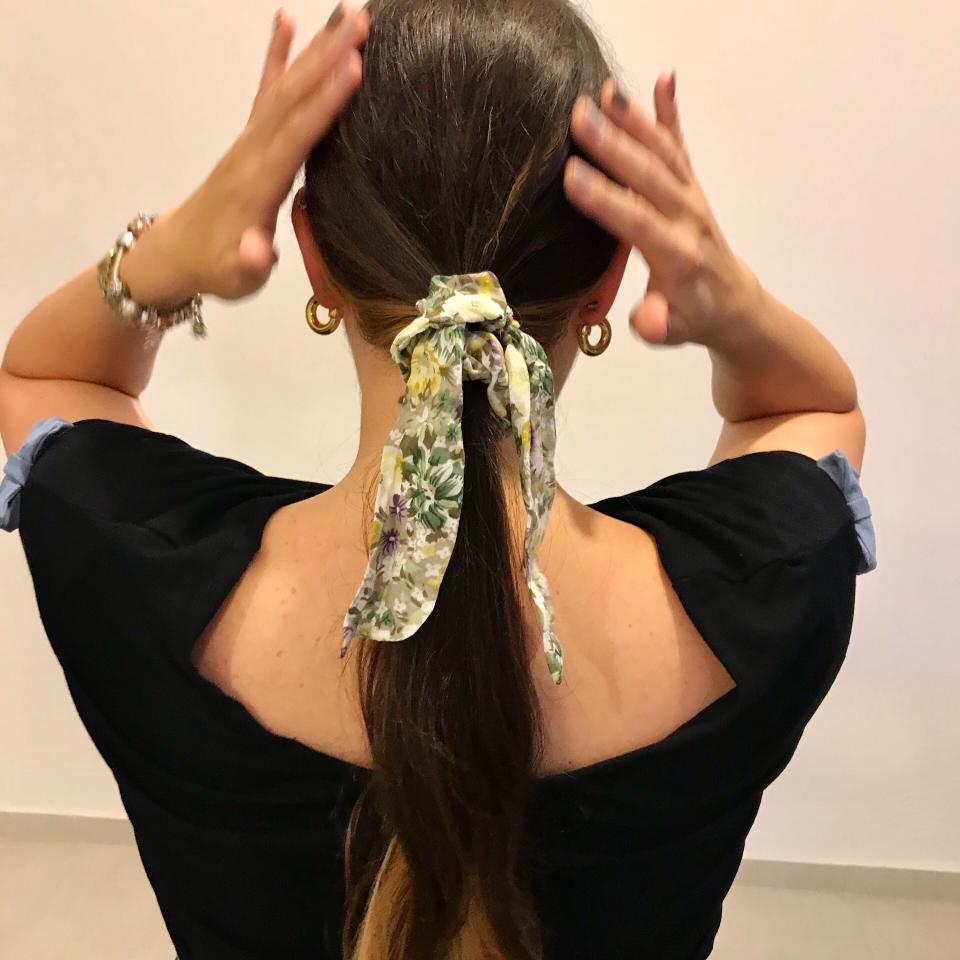
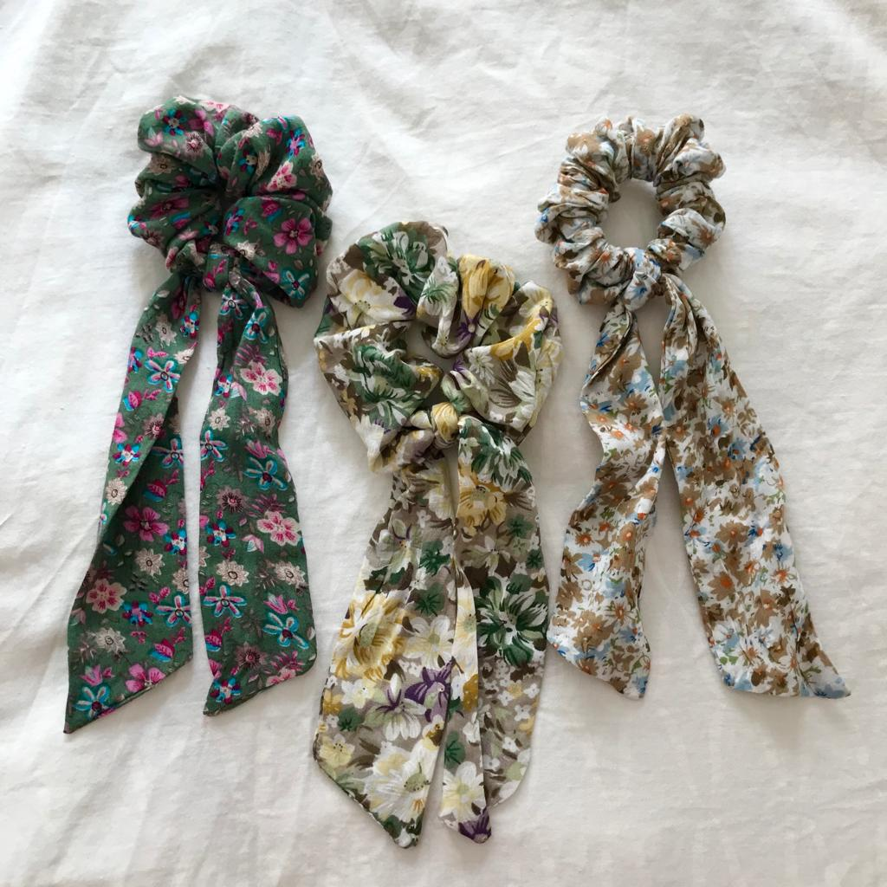
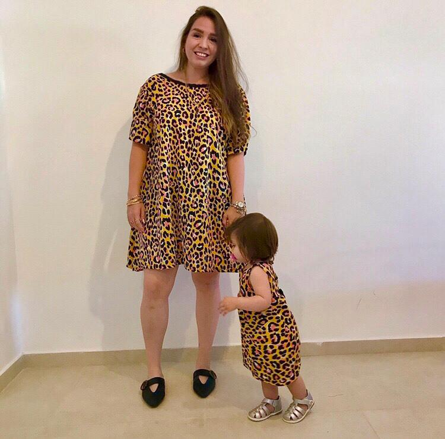
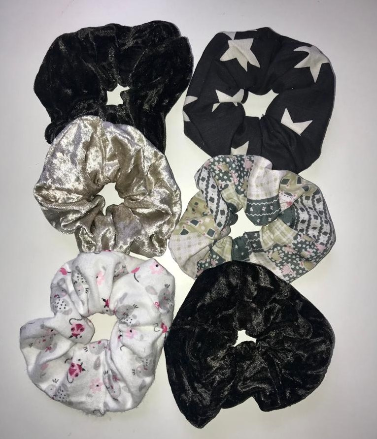

Gallery
My Sewing World
Since I was a child I love to do creative things. I remember when my aunt took me and taught me how to make a rug from a tricot yarn and I was so happy that I made it and create something from scratch. Also at my home I used to take some fabric and sew by hand a small bag, and make chlothing repairs when needed. Over the years I stop sew and create things. All passion and desire returned when I was pregnant I started to take a course of a few meeting in sewing. After the birth of my eldest daughter, I bought a box and decided that the box would be full of hairpins that I would make especially for her. Aמd as she got older I started sewing matching dresses for us. Now every spare moment I have I devote to sewing.Here Are Some Example Of What I Do
 
 
  

The First Sewing Machine

Charles Fredrick Wiesenthal, a German-born engineer working in England was awarded the first British patent for a mechanical device to aid the art of sewing, in 1755. His invention consisted of a double pointed needle with an eye at one end.[2] Newton Wilson's copy of Saint's sewing machine. Thomas Saint's chain stitch used on the first ever complete sewing machine design for leather work. An awl preceded the eye pointed needle to make a hole in preparation for the thread. Animation of a modern sewing machine as it stiches In 1790, the English inventor Thomas Saint invented the first sewing machine design, but he did not successfully advertise or market his invention.[3] His machine was meant to be used on leather and canvas material. It is likely that Saint had a working model but there is no evidence of one; he was a skilled cabinet maker and his device included many practically functional features: an overhanging arm, a feed mechanism (adequate for short lengths of leather), a vertical needle bar, and a looper.
In 1804, a sewing machine was built by the Englishmen Thomas Stone and James Henderson, and a machine for embroidering was constructed by John Duncan in Scotland.[5] An Austrian tailor, Josef Madersperger, began developing his first sewing machine in 1807 and presented his first working machine in 1814. Having received financial support from his government, the Austrian tailor worked on the development of his machine until 1839, when he built a machine imitating the weaving process using the chain stitch.